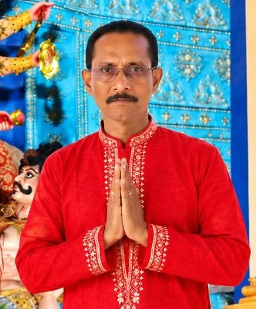
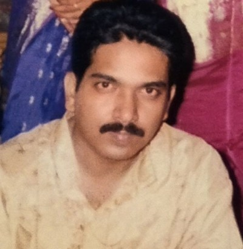

আমাদের কমিটি
শ্রী শ্রী দুর্গা বাড়ির পরিচালনা ও আয়োজনের সঙ্গে যুক্ত ব্যক্তিবর্গ।

সভাপতি
শ্রী সমীরণ কুমার মালাকার
২০২৬ – ২০৩১
সহ-সভাপতি
শ্রী ব্রজবাসী দাস
২০২৬ – ২০৩১

সম্পাদক
শ্রী বিষু ভূষণ মালাকার
২০২৬ – ২০৩১

সহকারী সম্পাদক
শ্রী অঞ্জন মালাকার
২০২৬ – ২০৩১
কোষাধ্যক্ষ
শ্রী অনুপম মালাকার
২০২৬ – ২০৩১
সহকারী কোষাধ্যক্ষ
শ্রী অরিজিৎ মালাকার
২০২৬ – ২০৩১
সোশ্যাল মিডিয়া ইনচার্জ
বিনীত মালাকার
স্থায়ী স্বেচ্ছাসেবী

কমিটির সদস্যবৃন্দ
শ্রী শ্রী দুর্গা বাড়ির সকল সদস্য, যাঁরা মাতৃ আরাধনা, ঐতিহ্য ও সামাজিক ঐক্য রক্ষায় কাজ করে চলেছেন।